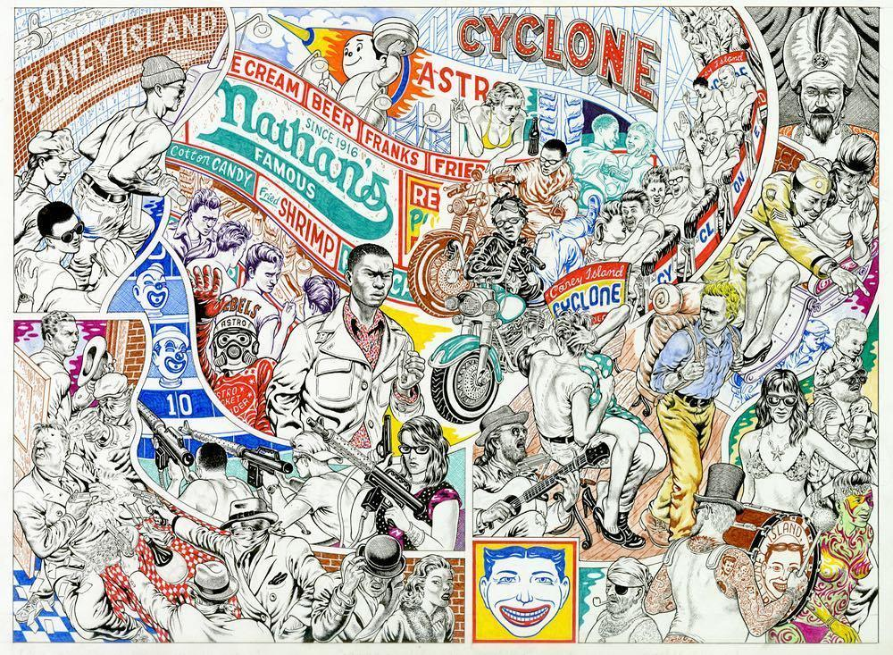

Tim Lane is a freelance illustrator, who also works on comics. His illustrations have appeared in magazines like New York Times, Rolling Stone Magazine, Utne Reader, New York Times Sunday Magazine, Business Week, Wall Street Journal, Boston Globe, Print Magazine, the New Republic, Believer Magazine and the Village Voice. He has also worked on commercial assignments, among others for Bob Callahan Studios in San Francisco, and is a drawing teacher in the Sam Fox School.
Lane's short comic stories have been published in comic books like 'Happy Hour in America', that also included his graphic novel 'Belligerent Piano'. Lane has self-published his experimental stories 'October Burlesque' and 'The Myth of Jack' as mini-comics. Fantagraphics has published a collection of his melancholic, nightmarish and self-reflective stories, called 'Abandoned Cars', in 2008, as well as the graphic novel 'The Lonesome Go' in 2014.
Tim Lane's comics are widely published in anthologies, including Fantagraphics' Hotwire and MOME, the Kean Review, Smoke Signal, and DC Comic's Bizarro World. Lane has produced weekly "illustrated columns" for the New York Press and the Riverfront Times, and he also makes "comic feature stories". Tim Lane draws his inspiration from Charles Burns, Will Eisner, film noir, 1950s pulp magazines and pre-code EC Comics.
